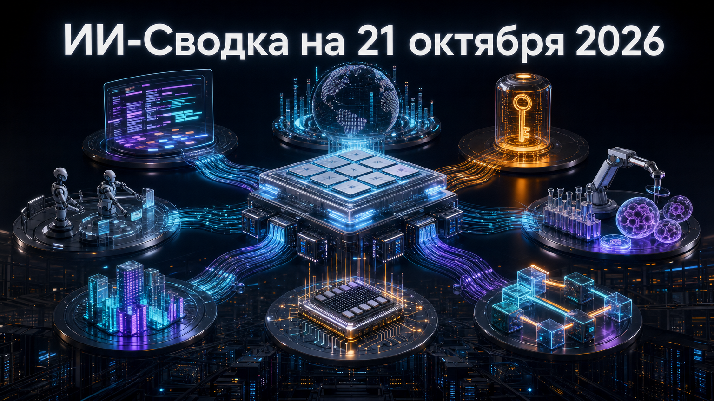

Повестка дня показывает, что конкуренция в ИИ всё заметнее перемещается из слоя самих моделей в среду их исполнения: ускорители, агентные инструменты, ключи доступа и стоимость вычислений. Одновременно OpenAI расширяет присутствие в биотехнологиях, а новые разработчики пытаются применять ИИ не только для написания, но и для ускорения уже работающего кода.
Главный практический вывод: компаниям всё чаще придётся выбирать не одну «лучшую» модель, а управляемый набор моделей, облаков, агентов и защитных контуров вокруг них.
Google Cloud сделала open source проект TorchTPU, который должен позволить запускать существующие PyTorch-нагрузки на TPU с минимальными изменениями конфигурации, а не с полным переписыванием приложения. Вместе с ним компания представила TPU agent suite для миграции и исправления ошибок; заявлена совместимость с распространёнными инструментами, включая Hugging Face, vLLM и SGLang.
Релиз снижает барьер для команд, чей стек исторически ориентирован на Nvidia и PyTorch, но которые рассматривают TPU и Google Cloud как альтернативу. Реальное влияние будет зависеть от зрелости совместимости, качества документации и того, насколько легко разработчики смогут перенести production-нагрузки. Подробнее — в анонсе Google Cloud.
GitHub выпустила Copilot CLI 1.0.101. В версии появился нативный structured output для динамических workflow-субагентов на поддерживаемых моделях, а также настройка assistedApprovalInstructions, помогающая задавать подсказки для режима подтверждения действий.
Структурированный результат важен для воспроизводимых многоагентных процессов: его проще передавать в следующие шаги workflow, проверять в скриптах и подключать к внутренней автоматизации. Релиз также исправляет проблемы с MCP, sandboxed-сессиями и переключением между GPT- и Gemini-моделями; независимой оценки эффекта новой функции пока нет. Полный список изменений опубликован в release notes GitHub.
Open-source coding-агент OpenCode, по данным Axios, сообщил о компрометации в ходе атаки, которую компания связала с инфраструктурой для дистилляции моделей. Злоумышленники получили API-ключи части клиентов, включая ключи к сервисам OpenAI, Anthropic и Google; OpenCode оценила затронутую долю пользователей Console в 1,4%.
Это напоминание, что агентная разработка расширяет периметр безопасности: ключи к нескольким модельным провайдерам могут оказаться в одной цепочке инструментов и интеграций. Сообщается, что поставщики моделей помогали отзывать ключи и разбираться с несанкционированными расходами, но точная хронология и техническая причина инцидента пока ограниченно раскрыты. Контекст расследования приводит Axios.
По данным квартального раскрытия SpaceX, сегмент Super Intelligence, куда входят Grok, Cursor и неооблачный бизнес, получил $7,5 млрд выручки при общей квартальной выручке компании $14,6 млрд. Сообщается также о $431 млн прибыли сегмента и 1,7 ГВт вычислительных мощностей в неооблачном бизнесе.
Эти цифры выделяют ИИ-направление как значимую часть бизнеса SpaceX, а не только долгосрочную инвестицию. Компания, как сообщается, планирует $35–40 млрд капитальных затрат в следующем квартале; масштабы такого расширения вновь связывают рост ИИ-сервисов с доступностью электроэнергии, площадок и ускорителей. Показатели приводит TechCrunch; материал обозначен как развивающаяся история.
OpenAI объявила о приобретении Orchestra Bio — стартапа, создававшего агентные инструменты для операционных процессов в разработке лекарств, включая финансовый учёт и координацию клинических испытаний. Команду и технологии Orchestra Bio планируется использовать в life-sciences-направлении Rosalind и Rosalind Workbench.
Сделка показывает, что OpenAI расширяет ставку на вертикальные ИИ-системы для науки и биотехнологий, где важны не только модельные способности, но и интеграция с регламентированными рабочими процессами. Стоимость сделки и точный план интеграции не раскрыты, поэтому коммерческий эффект пока оценить нельзя. О приобретении сообщает TechCrunch.
doubleAI представила Maxwell, или Maxwell’s Daemon, и открыла controlled early access. Компания называет продукт «моделью исполнения кода»: она наблюдает за работающей программой, создаёт оптимизированный машинный код под конкретные CPU и GPU и заявляет формальную проверку семантической эквивалентности замен.
Если подход подтвердится в production, он может стать отдельным слоем оптимизации для inference, обработки данных и видеопайплайнов: разработчику не потребуется вручную переписывать исходный код. Однако доступ пока ограничен, а заявленные ускорения — включая результаты для data pipelines и ИИ-инференса — не получили публичной независимой проверки. О механике и раннем доступе рассказывает страница Maxwell.
MiniMax объявила M3.1 Flash для агентных задач, программирования, computer use и кибербезопасности. Компания заявляет контекст до 1 млн токенов, доступ через API, M Plan и MiniMax Code, а также цену $0,15 за миллион входных и $0,60 за миллион выходных токенов; публикацию весов обещают позднее.
Сочетание большого контекста и низкой заявленной цены делает релиз заметным для разработчиков, которые считают стоимость длительных агентных задач. При этом показатели качества, скорости и экономии пока в основном являются заявлениями самой MiniMax, а сроки открытия весов не названы. Параметры и каналы доступа описаны в официальном сообщении MiniMax.